Blossom
Researching and providing a solution to increase user confidence and encourage good habits for lifelong plant care
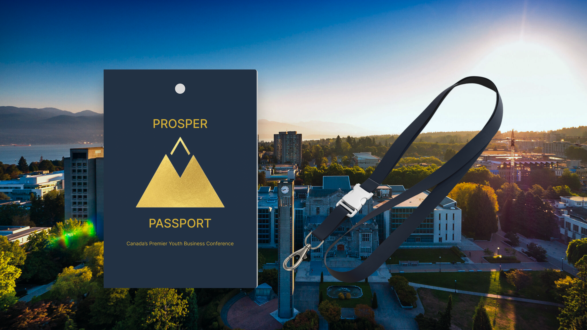
Designer
Prototyper
Workshop Organizer
Wireframing
User Ethnography
User Journey
User Persona
Sherman Ming
Cherry Nie
Eugene Zhu
Academic Project
13 Weeks
Jan 2023 - Apr. 2024
Figma
Figjam
Miro
It is a business case competition conference led by university students to connect aspiring highschool students interested in business with business enthusiasts in a competitive environment.
For this client, my team and I created a solution for them to improve the participant engagement and retention by using research methods to understand both the client and the participants.
RESEARCH METHODS
We communicated with our client via zoom to understand their goal. I wrote down the content and designed an ethnography poster with my team to identify how we will collect our data and what the design focus will be.
We then created personas and journey maps to further analyze the client's and user group's journey, identifying potential pain points and opportunities to address them.
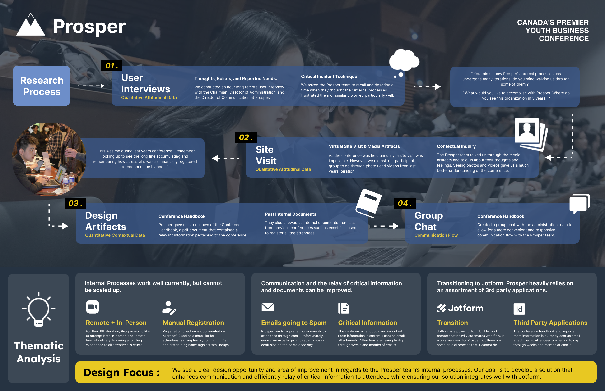
Design Ethnography Poster
RESEARCH METHODS
To further understand the participant group and the audience, we were invited to Strive, a conference following the same format as the Prosper Conference. I had the opportunity to talk to the attendees, see the experience as judges, and have first hand experience.
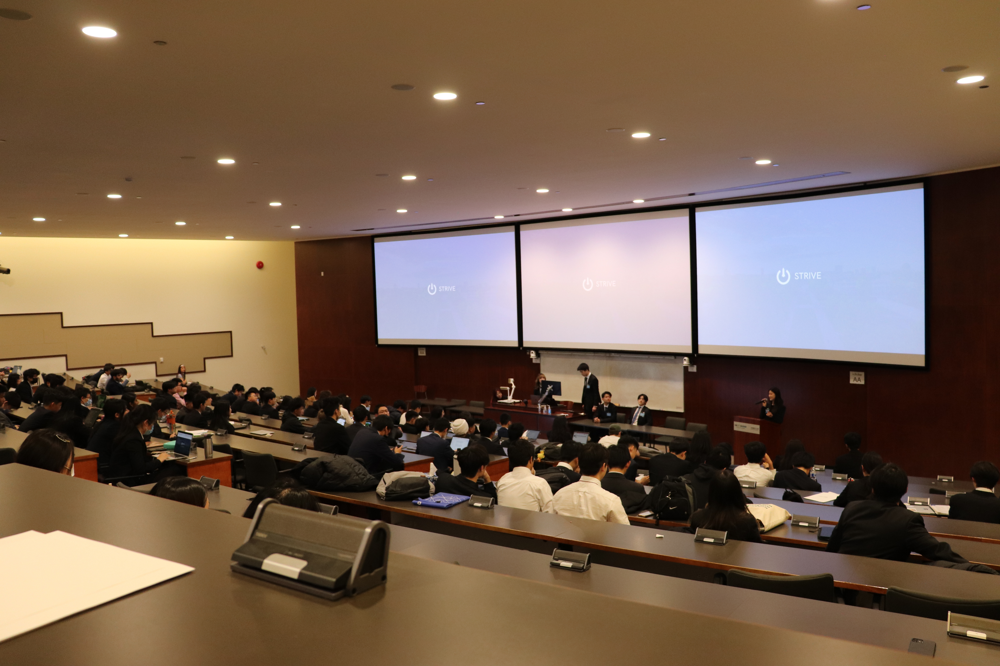
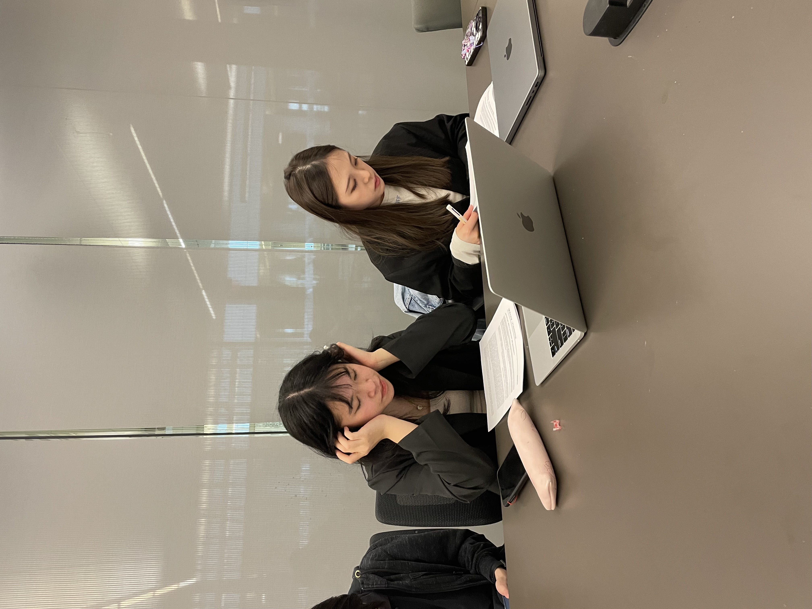
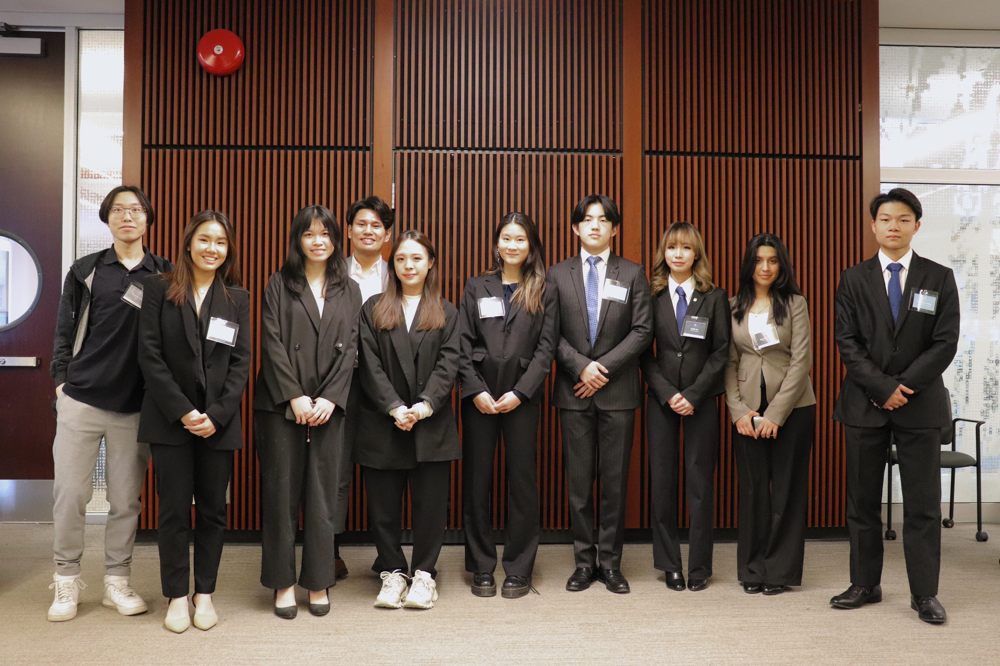
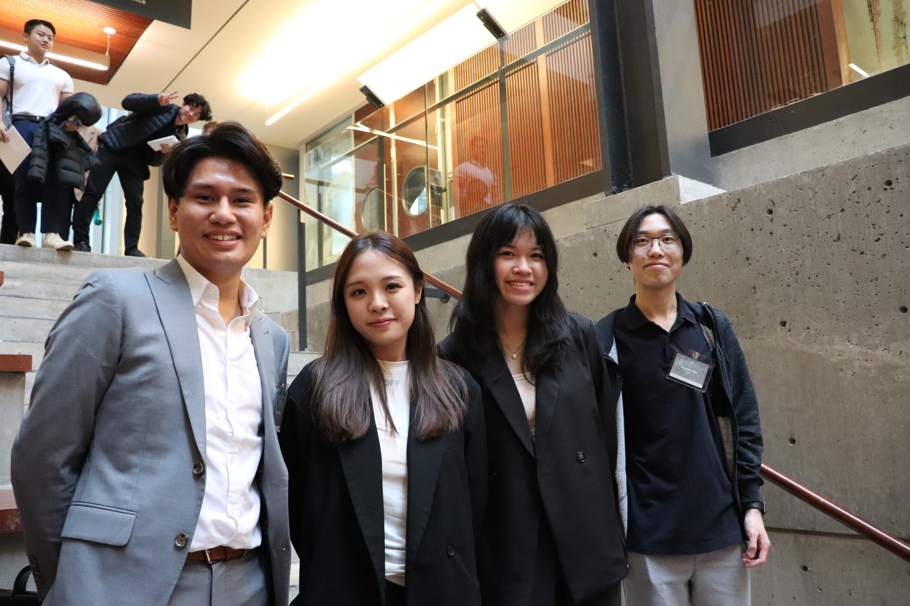
RESEARCH METHODS
We conducted a participatory workshop where we invited the chairman of the board and director of outreach to incorporate them in our ideation process. I was the workshop planner and organizer. I help lead the activities and took notes during the activities.

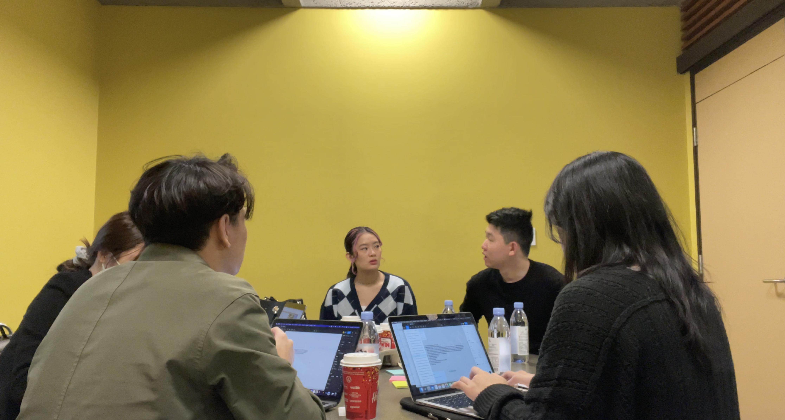
Brief Summary of our design focus and problem space
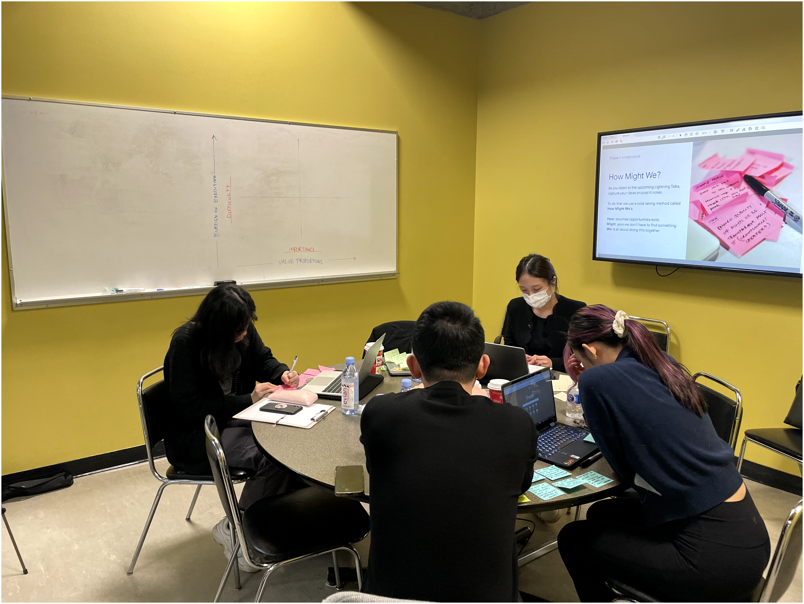
Creating questions that start with "How might we" to address potential issues that can cause a bad user experience
Goal: Taking current problems to create new ideas and possible solutions, while also ensuring everyone is on the same page
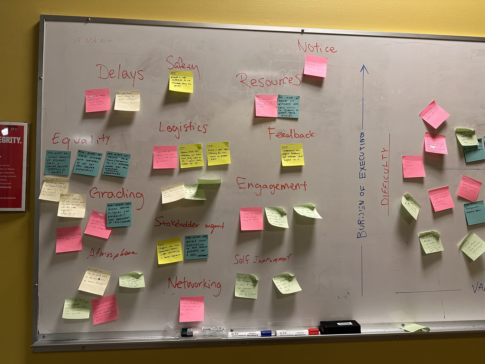
Took sticky notes from the "how might we" exercise, categorized them according to their similarities, and organized in 2 groups: include and exclude
Goal: To make sense of the information and narrow our design focus
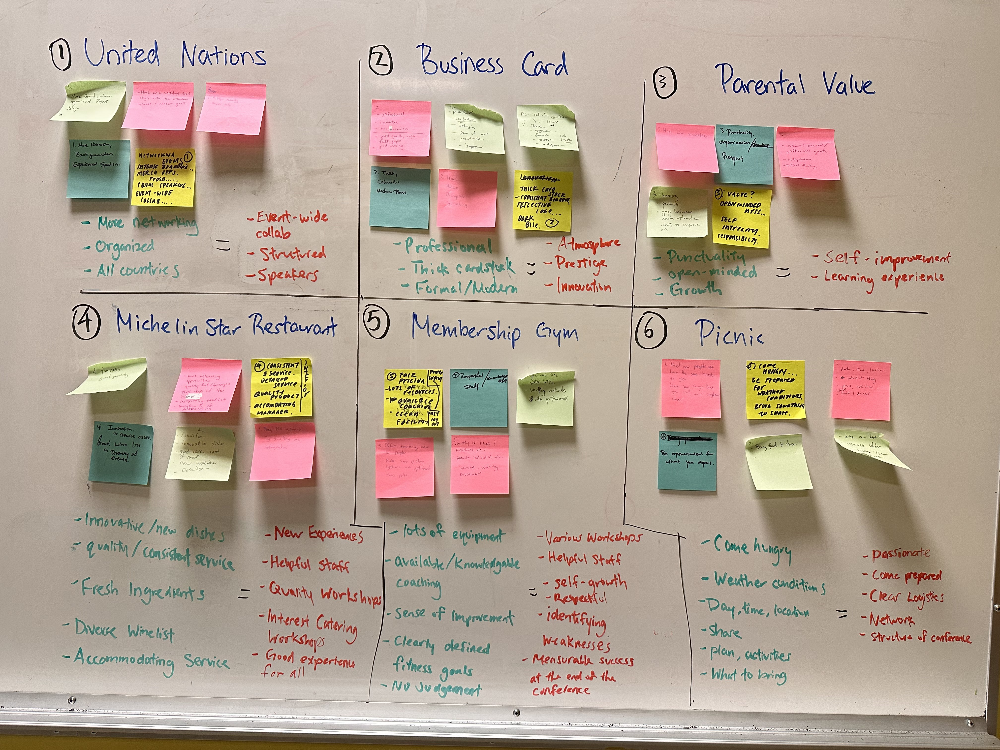
Developing as many concepts from unlikely pairings. Eg. If Prosper was a membership gym, how would Prosper retain monthly subscriptions?
Goal: To think outside the box
From the workshop, we learned that Prosper would like to focus more on delivering the "Prosper experience" with the hope of increasing attendee engagement. Therefore, we decided to prioritize the in-person learning experience of the attendees.
“How might we help Prosper create a conference environment that sets up attendees for success and one that fosters attendee engagement, self improvement and skill building while ensuring both new and returning attendees receive the full “Prosper Experience”.
"How might we help Prosper create a conference environment free of logistical issues so it sets up attendees to fully immerse themselves into the “Prosper Experience”, an experience defined by an environment for self-growth, improvement and skill building?"
After gathering all of our data, we decided to create a handbook for the attendees to keep track of the workshops and skills they have built.
I came up with the idea of pin achievements. I was inspired by my experience at Encounters with Canada. During my visit, I exchanged pins with others and put them on my lanyard.
I created medium to high fidelity wireframes for each page. I was in charge of the layout, design and styling for the passport and I made the content for the goal and stamp pages.
SOLUTION
A passport sized handbook for attendees to track their self-growth & improvement.
I refined the cover and page layouts of the passport. Additionally, I created the content for all pages except the introduction and achievement pages in which I helped proofread.
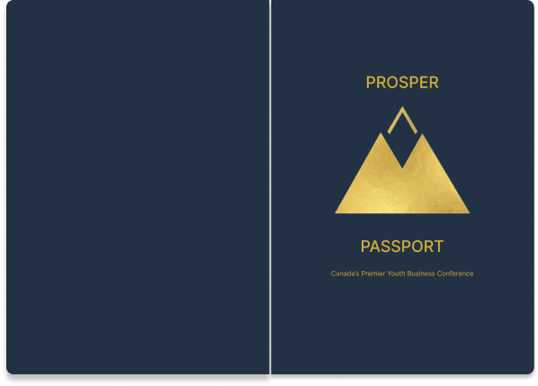
CONTENTS
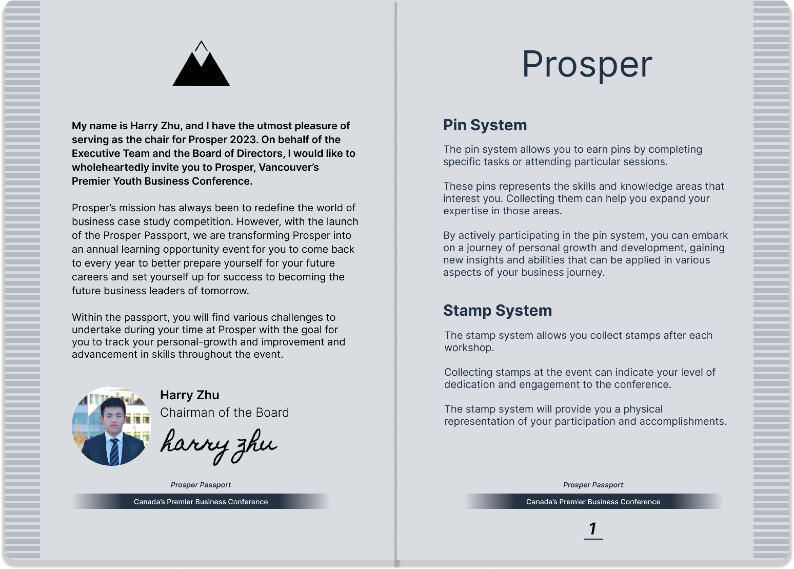
A message from Chairman of the Board. Introduction to Prosper and the relevance of the passport.
Summary of the pin achievement & stamp system.
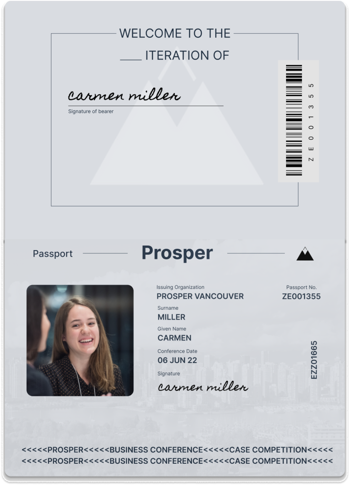
An identification page where attendees can input their own photo or draw themselves.
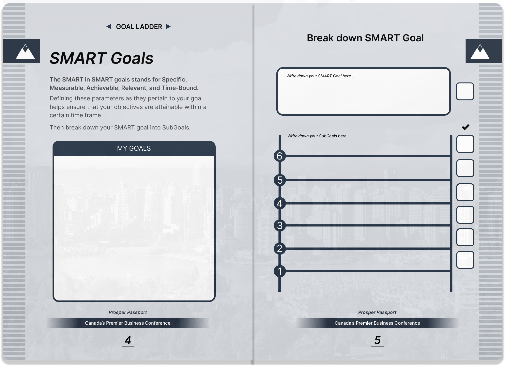
Attendees can write down their goals following the SMART goals format.
Attendees are encouraged to break down their main goal into smaller, achievable sub-goals, which they can then check off.

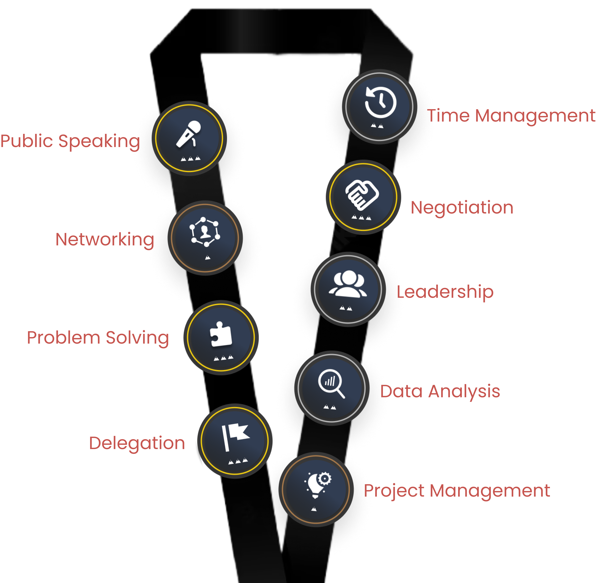
Skill building pages which has descriptions of important business skills, their significance and the benefits they offer.
Each achievement consists of three tiers, for which the passport provides step-by-step explanations on how to achieve them.
Attendees will be rewarded a unique pin based on the number of credits they earn for a specific skill.

Stamps can be collected after completing workshops.
I learned that I should look deeper into the users' journey and needs, and be more open minded and flexible rather than looking at it from a digital standpoint. Not all design solutions need to be a websites. Additionally, I've had the opportunity to use various new research methods, helping me learn the importance of them and when to use them.
If I were to do this project again, I would not go in depth with our initial concepts with the small amount of data collected because we continued iterating on them and restricted our thoughts to those concepts once we collected more data. It's important to be patient and expand on concepts once we have gathered the necessary data.
Researching and providing a solution to increase user confidence and encourage good habits for lifelong plant care
Designing a microsite for beginner family campers. It informs them about various camping sites